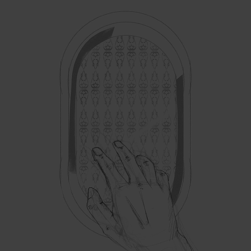
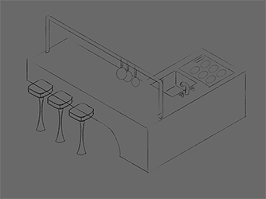
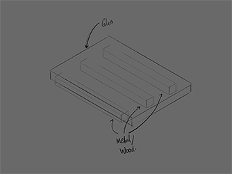
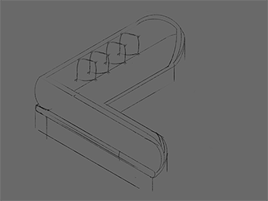

About Me
Hello! I'm Ahmed Alshatti, a passionate computer science student hailing from the vibrant city of Kuwait and currently pursuing my education at CU Boulder. While my academic pursuits keep me engaged with the fascinating world of technology, my heart lies in the vast realm of art in all its diverse forms.
Beyond coding and algorithms, I find joy in the expressive melodies of music, the vivid strokes of a paintbrush, the intricacies of graphic design, the delights of culinary arts, the allure of perfumes, and the textures of fashion. I believe in the power of interdisciplinary creativity, allowing different forms of art to inspire and complement each other.
As a university student, I am not only dedicated to my academic journey but also committed to exploring the intersections of technology and art. Join me on this exciting adventure as I navigate the fascinating blend of code and creativity, striving to make a meaningful impact in both the digital and artistic realms.
Favorite Project
  In the realm of contemporary design, my three favorite furniture creations epitomize the seamless fusion of minimalism and modernity, each embodying a unique aesthetic and functionality. The first masterpiece is a sleek kitchen unit that transcends conventional boundaries. This culinary marvel seamlessly integrates a state-of-the-art stove and a minimalist sink, all enveloped in a seamless, monolithic structure that exudes sophistication. The glossy, monochromatic surface not only enhances its visual appeal but also ensures effortless maintenance, echoing the core tenets of minimalism. Accompanying this culinary haven are a set of avant-garde bar stools, featuring clean lines and a harmonious interplay of materials. Crafted from a combination of polished steel and streamlined leather, these stools not only provide ergonomic comfort but also serve as a visual complement to the kitchen unit's contemporary aesthetic.
Moving beyond the confines of the kitchen, my second creation stands as a testament to the epitome of modern comfort—the minimalist sofa. This seating masterpiece challenges traditional sofa designs by embracing clean lines, low profiles, and a fusion of textures. A neutral color palette dominates the sofa, allowing it to seamlessly integrate into any living space. The upholstery, a blend of high-quality fabric and leather, exudes tactile luxury while ensuring durability. The modular design of the sofa offers flexibility, allowing users to customize their seating arrangements based on their preferences. The incorporation of hidden storage compartments further enhances the functionality of this minimalist marvel, catering to the modern homeowner's desire for both form and utility.
Completing this trifecta of design excellence is a coffee table that transcends its utilitarian purpose, becoming a sculptural centerpiece in any living space. This minimalist marvel features a geometrically inspired base crafted from sustainable materials, embracing both form and function. The tabletop, a seamless expanse of tempered glass, creates an illusion of weightlessness, adding an ethereal quality to the design. The clean lines and simplicity of the coffee table make it a versatile addition to any interior, whether it be a cozy living room or a cutting-edge office space. In its simplicity, this coffee table becomes a conversation starter, inviting users to appreciate the artistry of minimalism and modern design.